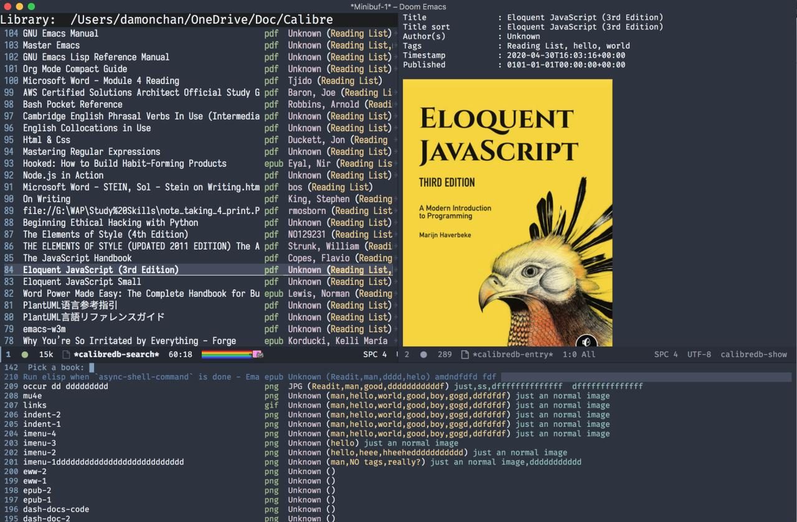
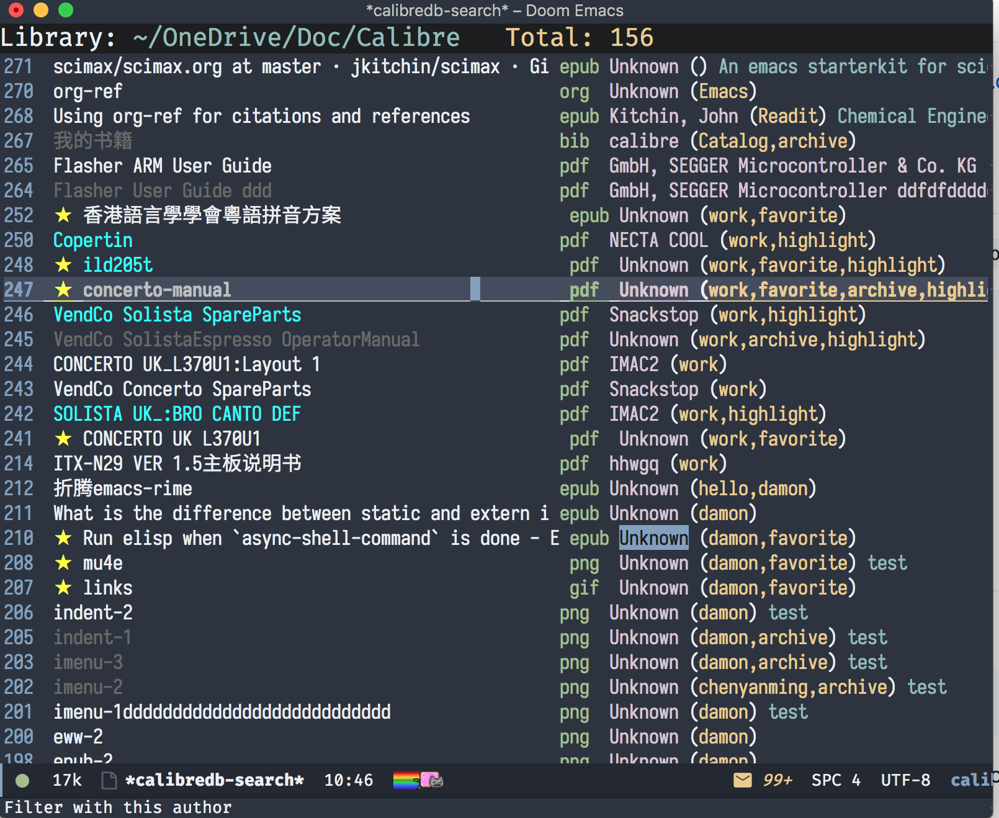
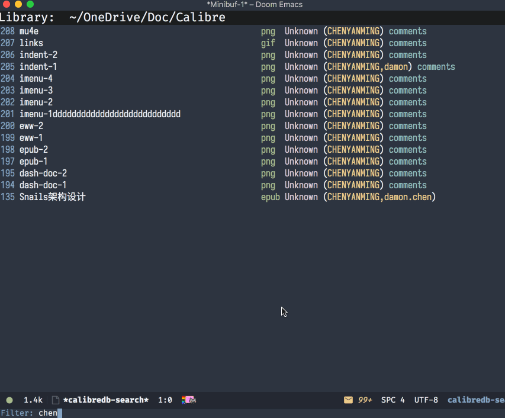
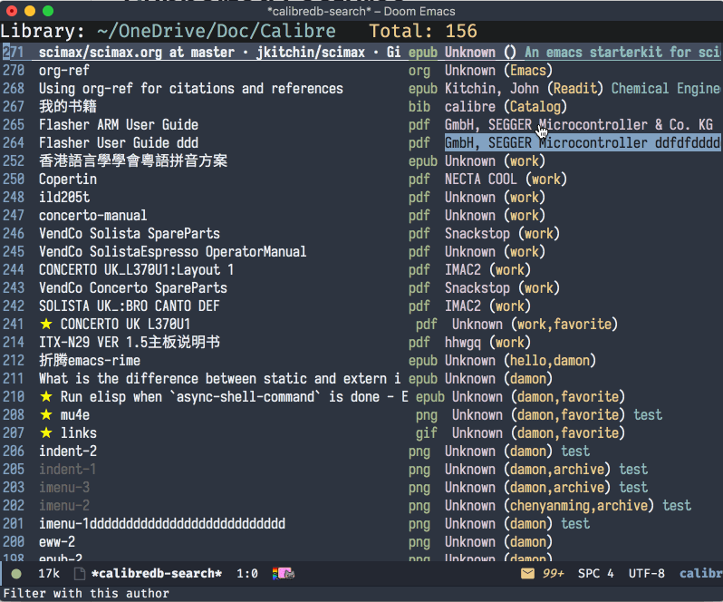
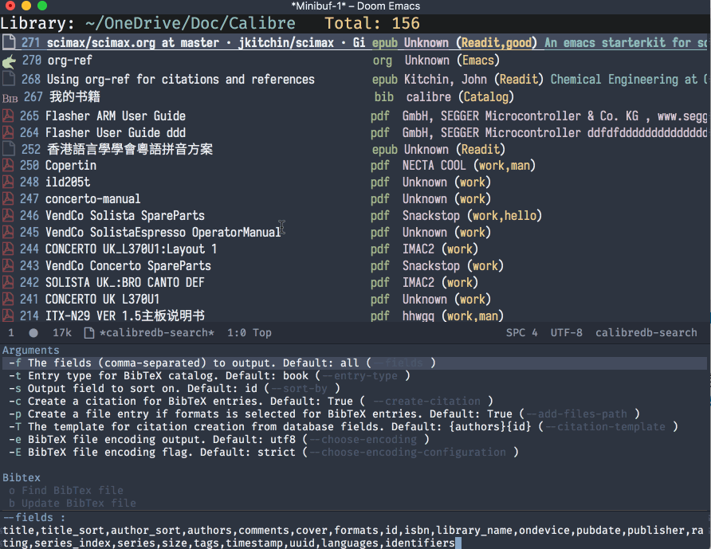
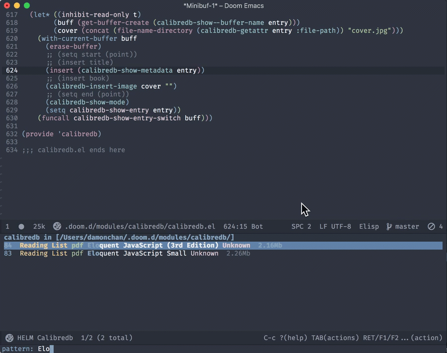

calibredb.el
Table of Contents
- 1. Description
- 2. Installation
- 3. Configuration
- 4. Workflows
- 5. Q&A
- 5.1. Transient commands
- 5.2. What is my working library?
- 5.3. How to open an ebook?
- 5.4. How to add ebooks?
- 5.5. How to remove ebooks?
- 5.6. How to switch virtual libraries?
- 5.7. How to switch libraries?
- 5.8. How to set metadata on ebooks?
- 5.9. How to mark favorite/highlight/archive on ebooks?
- 5.10. How to do live filtering?
- 5.11. How to do quick filtering?
- 5.12. How to interact with org-ref?
- 5.13. Why the loading time is so long?
- 5.14. Can not remember the keybindings?
- 5.15. How to edit annotation with org-mode?
- 5.16. How to search in ebooks directly?
- 5.17. More examples?
- 6. Supported Features
- 6.1. calibredb
- 6.2. calibredb-search-live-filter
- 6.3. calibredb-find-helm
- 6.4. calibredb-find-counsel
- 6.5. calibredb-list
- 6.6. calibredb-clone
- 6.7. calibredb-library-list
- 6.8. calibredb-switch-library
- 6.9. Show details
- 6.10. Dispatch
- 6.11. add
- 6.12. remove
- 6.13. setmetadata
- 6.14. Export
- 6.15. Catalog
- 6.16. calibredb-rga
- 7. Logs
- 7.1.
2020-12-25 - 7.2.
2020-10-12 - 7.3.
2020-08-29 - 7.4.
2020-08-09 - 7.5.
2020-07-16 - 7.6.
2020-07-01 - 7.7.
2020-06-22 - 7.8.
2020-06-21 - 7.9.
2020-06-11 - 7.10.
2020-06-07 - 7.11.
2020-06-06 - 7.12.
2020-06-05 - 7.13.
2020-06-05 - 7.14.
2020-06-04 - 7.15.
2020-05-31 - 7.16.
2020-05-30 - 7.17.
2020-05-16 - 7.18.
2020-05-15 - 7.19.
2020-05-14 - 7.20.
2020-05-13 - 7.21.
2020-05-10 - 7.22.
2020-05-09
- 7.1.
1 Description
Yet another calibre client for emacs.

This package integrates calibre (using calibredb) into emacs.
- Powerful ebook dashboard.
- Manage ebooks, actually not only ebooks!
- Fetch metadata from online sources incl. automatic detection of ISBN for pdf and djvu files (automatic detection of ISBN requires pdf-tools and djvu package for pdf and djvu files respectively)
- Manage Ebooks’ libraries and virtual libraries.
- Customized Metadata: Tag, comment, highlight, favorite, archive etc.
- Quick search, filter, make actions on items with ivy and helm.
- Org-ref support.
1.1 Related package
- toc-mode (easily manage pdf/djvu document’s Table Of Contents)
- centaur-tabs/awesome-tab (Enable tab in emacs, turn eamcs into a modern multiple tabs pdf/epub reader.)
2 Installation
2.1 Install sqlite and calibre
2.1.1 macOS
brew install sqlite
Download calibre’s DMG file from https://calibre-ebook.com/download_osx, install calibre.app to /Applications
2.1.2 Windows
With chocolatey
choco install sqlite calibre
2.1.3 Linux
For example, in Ubuntu 18.04:
sudo apt install sqlite3 calibre
2.2 Install calibredb.el
It’s available on Melpa :
M-x package-install calibredb
2.3 Spacemacs Layer
For Spacemacs this calibre-layer implements calibre.el with evilified keybindings
3 Configuration
3.1 Quick Start
3.1.1 require
(require 'calibredb) (setq calibredb-root-dir "~/OneDrive/Doc/Calibre") (setq calibredb-db-dir (expand-file-name "metadata.db" calibredb-root-dir)) (setq calibredb-library-alist '(("~/OneDrive/Doc/Calibre") ("/Users/damonchan/Documents/Books Library") ("/Users/damonchan/Documents/HELLO") ("/Users/damonchan/Documents/Books") ("/Users/damonchan/Documents/World")))
PS: If sqlite3 and calibredb is in not in your system path, set them with
(setq sql-sqlite-program "/usr/bin/sqlite3") (setq calibredb-program "/Applications/calibre.app/Contents/MacOS/calibredb")
3.1.2 use-package
(use-package calibredb :defer t :init (autoload 'calibredb "calibredb") :config (setq calibredb-root-dir "~/OneDrive/Org/Doc/Calibre") (setq calibredb-db-dir (expand-file-name "metadata.db" calibredb-root-dir)) (setq calibredb-library-alist '(("~/OneDrive/Org/Doc/Calibre") ("~/Documents/Books Library") ("~/Documents/LIB1") ("/Volumes/ShareDrive/Documents/Library/"))))
3.2 Virtual Libraries
Virtual libraries are some convenient shortcuts for quick filtering the Ebooks
by setting the calibredb-search-filter.
(setq calibredb-virtual-library-alist '(("1. Development - work" . "work \\(pdf\\|epub\\)") ("2. Read it later" . "Readit epub") ("3. Development - rust" . "rust")))
3.3 Column width
You can configure the column width:
For example:
(setq calibredb-id-width 4)
- Set positive to limit the width.
- Set 0 to hide.
- Set -1 to keep original length.
The following columns are supported:
calibredb-id-widthcalibredb-format-widthcalibredb-tag-widthcalibredb-title-widthcalibredb-author-widthcalibredb-comment-width
Then in *calibredb-search* buffer, press r to refresh the library.
3.4 Size indicator
Enable size indicator:
(setq calibredb-size-show t)
Then in *calibredb-search* buffer, press r to refresh the library.
3.5 File format icons
You can choose all-the-icons or icons-in-terminal to render the icons. You have to install the icons packages by yourself, otherwise it would not work.
To enable all-the-icons:
(setq calibredb-format-all-the-icons t)
To enable icons-in-terminal:
(setq calibredb-format-icons-in-terminal t)
Then in *calibredb-search* buffer, press r to refresh the library.
Notice: Do not enable icons on big libraries, it will consume a lot of time than you imagine.
TODO: Auto disable format icons when dealing with big libraries.
3.6 Configure to support org-ref
You can output a BibTex file which can be used in org-ref.
(require 'org-ref) (setq calibredb-ref-default-bibliography (concat (file-name-as-directory calibredb-root-dir) "catalog.bib")) (add-to-list 'org-ref-default-bibliography calibredb-ref-default-bibliography) (setq org-ref-get-pdf-filename-function 'org-ref-get-mendeley-filename)
3.7 keybindings
(defvar calibredb-show-mode-map (let ((map (make-sparse-keymap))) (define-key map "?" #'calibredb-entry-dispatch) (define-key map "o" #'calibredb-find-file) (define-key map "O" #'calibredb-find-file-other-frame) (define-key map "V" #'calibredb-open-file-with-default-tool) (define-key map "s" #'calibredb-set-metadata-dispatch) (define-key map "e" #'calibredb-export-dispatch) (define-key map "q" #'calibredb-entry-quit) (define-key map "y" #'calibredb-yank-dispatch) (define-key map "," #'calibredb-quick-look) (define-key map "." #'calibredb-open-dired) (define-key map "\M-/" #'calibredb-rga) (define-key map "\M-t" #'calibredb-set-metadata--tags) (define-key map "\M-a" #'calibredb-set-metadata--author_sort) (define-key map "\M-A" #'calibredb-set-metadata--authors) (define-key map "\M-T" #'calibredb-set-metadata--title) (define-key map "\M-c" #'calibredb-set-metadata--comments) map) "Keymap for `calibredb-show-mode'.") (defvar calibredb-search-mode-map (let ((map (make-sparse-keymap))) (define-key map [mouse-3] #'calibredb-search-mouse) (define-key map (kbd "<RET>") #'calibredb-find-file) (define-key map "?" #'calibredb-dispatch) (define-key map "a" #'calibredb-add) (define-key map "A" #'calibredb-add-dir) (define-key map "c" #'calibredb-clone) (define-key map "d" #'calibredb-remove) (define-key map "D" #'calibredb-remove-marked-items) (define-key map "j" #'calibredb-next-entry) (define-key map "k" #'calibredb-previous-entry) (define-key map "l" #'calibredb-virtual-library-list) (define-key map "L" #'calibredb-library-list) (define-key map "n" #'calibredb-virtual-library-next) (define-key map "N" #'calibredb-library-next) (define-key map "p" #'calibredb-virtual-library-previous) (define-key map "P" #'calibredb-library-previous) (define-key map "s" #'calibredb-set-metadata-dispatch) (define-key map "S" #'calibredb-switch-library) (define-key map "o" #'calibredb-find-file) (define-key map "O" #'calibredb-find-file-other-frame) (define-key map "v" #'calibredb-view) (define-key map "V" #'calibredb-open-file-with-default-tool) (define-key map "," #'calibredb-quick-look) (define-key map "." #'calibredb-open-dired) (define-key map "y" #'calibredb-yank-dispatch) (define-key map "b" #'calibredb-catalog-bib-dispatch) (define-key map "e" #'calibredb-export-dispatch) (define-key map "r" #'calibredb-search-refresh-and-clear-filter) (define-key map "R" #'calibredb-search-clear-filter) (define-key map "q" #'calibredb-search-quit) (define-key map "m" #'calibredb-mark-and-forward) (define-key map "f" #'calibredb-toggle-favorite-at-point) (define-key map "x" #'calibredb-toggle-archive-at-point) (define-key map "h" #'calibredb-toggle-highlight-at-point) (define-key map "u" #'calibredb-unmark-and-forward) (define-key map "i" #'calibredb-edit-annotation) (define-key map (kbd "<DEL>") #'calibredb-unmark-and-backward) (define-key map (kbd "<backtab>") #'calibredb-toggle-view) (define-key map (kbd "TAB") #'calibredb-toggle-view-at-point) (define-key map "\M-n" #'calibredb-show-next-entry) (define-key map "\M-p" #'calibredb-show-previous-entry) (define-key map "/" #'calibredb-search-live-filter) (define-key map "\M-t" #'calibredb-set-metadata--tags) (define-key map "\M-a" #'calibredb-set-metadata--author_sort) (define-key map "\M-A" #'calibredb-set-metadata--authors) (define-key map "\M-T" #'calibredb-set-metadata--title) (define-key map "\M-c" #'calibredb-set-metadata--comments) map) "Keymap for `calibredb-search-mode'.")
PS: Keybindings might be changed in future versions.
4 Workflows
There are three ways to manage your ebooks:
4.1 Start with calibredb
First, M-x calibredb to enter ebook dashboard.
You can perform the following actions:
- Open/View the ebook
- Open Dired the ebook located
- Fetch (from Google and Amazon.com) and set metadata on the ebook under cursor
- Set metadata on marked ebooks
- Add/Remove ebooks on current library
- Export the ebook under cursor
- Clone/Switch/Jump to different libraries
- Live filter the results
- Generate Catalog, such as a BibTex file
- Favorite, highlight and archive the items
4.2 Start with calibredb-find-helm or calibredb-find-counsel
M-x calibredb-find-helmorcalibredb-find-counselto enter the ebook listC-i(Helm)C-o(Counsel) to enter the action menus.
4.3 Start with calibredb-list
M-x calibredb-listto enter ebook dashboard (buffer*calibredb-list*)
PS: Workflows might be slightly changed in future versions.
Notice: This package use calibredb update the metadata.db file rather than use sqlite to update the database. Sqlite is only used for reading rather than updating and deleting. It should be safe to modify the database with this package, but it is still very important to do backup by yourself. For example, with cloud services.
5 Q&A
The keybindings mentioned below are referenced from
keybindings.5.1 Transient commands
calibredb supports Transient commands just like magit. Most of the features are binded in Transient commands. You can press ? to checkout.
calibredb-dispatch: Invoke a calibredb command from a list of available commands in*calibredb-search*buffer.calibredb-entry-dispatch: Invoke a calibredb command from a list of available commands in*calibredb-entry*buffer.calibredb-set-metadata-dispatch: Set metadata.calibredb-export-dispatch: Export files.calibredb-catalog-bib-dispatch: BibTex operation.calibredb-yank-dispatch: Invoke a Yank operation.
5.2 What is my working library?
M-x calibredb, your current library path shows in the header in buffer *calibredb-search*
Besides, variable calibredb-root-dir also saves the current library location.
5.3 How to open an ebook?
M-x calibredb- In
*calibredb-search*buffer, move the cursor to the ebook you want to open. - Press
RET/o/O/Vto open it. - If you are using macOS, you can also press
,to quick look the ebook.
- In
M-xcalibredb-find-helmorcalibredb-find-counsel- Select the ebook you want to open in the list
- Press
RETto open it.
M-x calibredb- In
*calibredb-search*buffer, move the cursor to the ebook and pressvto show details, or justRight Clickon the ebook. - Then in
*calibredb-entry*buffer, presso/O/Vto open it.
- In
5.4 How to add ebooks?
M-x calibredb-add, select, mark ebooks (only ivy supports mark/unmark currently - withivy-hydra, in ivy-window, pressmto mark,DELoruto unmark. Other engines can only select one item) and add to current library.M-x calibredb-add-dirand select one directory, all supported formats will be added into current library.
Please notice: Add books may fail! There are some reasons:
- The book already exists in the database. If you still want to add the duplicated books, you can set
calibredb-add-duplicatetoNon-Nil. - Not all book formats are supported. If you can not add a specific book, check the logs in Messages buffer.
5.5 How to remove ebooks?
M-x calibredb- move the cursor to the ebook you want to delete, press
d, calibredb will ask you to delete or not.
- move the cursor to the ebook you want to delete, press
M-xcalibredb-find-helmorcalibredb-find-counsel- Select the ebook you want to delete in the list
C-i(Helm)C-o(Counsel) to enter the action menu.- Perform remove action as shown in the menu.
PS: If you want to delete in bulk with marked items, use calibredb-remove-marked-items. m to mark items, D to bulk delete.
5.6 How to switch virtual libraries?
First, set calibredb-library-alist to include the calibre virtual libraries.
(setq calibredb-virtual-library-alist '(("1. Development - work" . "work \\(pdf\\|epub\\)") ("2. Read it later" . "Readit epub") ("3. Development - rust" . "rust")))
Then, in *calibredb-search* buffer,
- Press
lto open the library list and select the library. - Press
norpto switch to next or previous library.
Or, in *calibredb-search* buffer, call calibredb-virtual-library-list directly and select
the library.
5.7 How to switch libraries?
Set calibredb-library-alist to include the calibre libraries.
Make sure the libraries are valid. Create libraries using Calibre GUI or M-x
calibredb-clone to clone the existing library to a new library, before setting
it in calibredb-library-alist.
(setq calibredb-library-alist '(("~/OneDrive/Doc/Calibre") ("/Users/damonchan/Documents/Books Library") ("/Users/damonchan/Documents/HELLO") ("/Users/damonchan/Documents/Books") ("/Users/damonchan/Documents/World")))
Then, in *calibredb-search* buffer,
- Press
Lto open the library list and select the library. - Press
NorPto switch to next or previous library.
Or in *calibredb-search* buffer, call calibredb-library-list directly and select
the library.
If the library is not defined in calibredb-library-alist, you can call
calibredb-switch-library and select the path of the library that you want to
switch temporarily.
5.8 How to set metadata on ebooks?
- In
*calibredb-search*buffer,m/DEL/uto mark/unmark backward/unmark forward items, andsto set metadata in bulk. If you do not mark any items, actions will be performed on the item under cursor. - In
*calibredb-entry*buffer, presssto set metadata. - In
*calibredb-search*buffer, presss fto fetch metadata by author and title ors ito fetch by ISBN. For fetching by author and title enter one (or more) full lastnames of the author(s) (or delete redundant input from initial input). For fetching by ISBN enter the ISBN number (usually can be found and copied from on of the first pages of a book). As the title may contain the ISBN it is set as initial input. Wait few second for Emacs to retrieve metadata from the sources. Subsequently useC-M-n/C-M-pto select and preview the source to use for adding the metadata to the document. PressRETto add selected metadata to source. - In
*calibredb-search*buffer, presss dto fetch metadata by identifier.
Tips: You can filter the result via / before setting the metadata.
5.8.1 About fetch-ebook-metadata
We are using fetch-ebook-metadata cli tool to fetch the metadata. However,
fetching ebook metadata is a little tricky, especially about the sources
configurations. Since the settings on calibre GUI would affect the
fetch-ebook-metadata cli. Follow below steps to setup.
- Set up the source settings in Calibre GUI. You are right, you need to configure the settings on GUI first.
- Preferences -> Preferences -> Sharing/Metadata download
- Tick ’source’ you like to use
- Set the ’Cover priority’
- Apply
- Specify the list of metadata download plugins to use, this should be the same as the calibre GUI configuration.
(setq calibredb-fetch-metadata-source-list '("Google" "Amazon.com" "Douban Books"))
5.9 How to mark favorite/highlight/archive on ebooks?
In
*calibredb-search*buffer,mto mark the items,f/h/xto toggle favorite/highlight/archive status on marked items.Demo:

5.10 How to do live filtering?
- Press
/to start live filtering.
Here is the demo: 
5.11 How to do quick filtering?
- Click the
calibredb-favorite-icon, authors, file format, and tags. Press
r/Rto reset the filtering.Demo:

5.12 How to interact with org-ref?
Setup org-ref
(require 'org-ref) (setq calibredb-ref-default-bibliography "~/Desktop/catalog.bib") (add-to-list 'org-ref-default-bibliography calibredb-ref-default-bibliography) (setq org-ref-get-pdf-filename-function 'org-ref-get-mendeley-filename)
or
(use-package! org-ref :after-call calibredb :config (setq calibredb-ref-default-bibliography "~/Desktop/catalog.bib") (add-to-list 'org-ref-default-bibliography calibredb-ref-default-bibliography) (setq org-ref-get-pdf-filename-function 'org-ref-get-mendeley-filename))
- In
*calibredb-search*buffer,bbto generate the ebook catalogs with a BibTex file. - The BibTex file is generated under current library path -
calibredb-root-dir. - Every time you switch your library, the corresponding BibTex file path will
added into
org-ref-default-bibliographytemporarily. In an org file,
C-c ]to insert cite.Demo: 
5.13 Why the loading time is so long?
For some big libraries, such as the libraries that has 10000+ books, the package will need a few seconds to query and decode all the metadata. This will be improved in future versions.
You should know the following test results and behaviors so that it will not frustrate you when dealing with big libraries:)
- Tested with a library that has 8668 books, using 4.2 GHz Intel Core i7 in
macOS 10.13.6, around
2to3seconds to query the database. - DO NOT setq
calibredb-format-icont on big library. Tested with a library that has 8668 books, using 4.2 GHz Intel Core i7 in macOS 10.13.6, around37seconds to query the database. - The first time to enter
calibredb, is to query and decode the whole database. After that, all data will be saved incalibredb-search-entries. Therefore, the next time to load the library is just readingcalibredb-search-entriesand show again. And you can feel much happier starting from the second time. - Update metadata, refresh dashboard, and switch library will re-query and decode the whole database.
5.14 Can not remember the keybindings?
Press ?, it will show you almost all actions.
Demo:

5.15 How to edit annotation with org-mode?
In *calibredb-search* buffer,
M-x calibredb-edit-annotation
Or press i.
By default, the annotation would be saved to comments field. If you want to
change to other filed, please set with the following statement:
(setq calibredb-annotation-field "comments")
Please notice: Due to the limitation of calibredb, the blank new lines will be deleted.
5.16 How to search in ebooks directly?
We wrap counsel-ag in calibredb-rga, using the power of ripgrep-all.
First, install ripgrep-all,
then in *calibredb-search*, *calibredb-entry* buffer or under pdf-view-mode / nov-view-mode,
M-x calibredb-rga
5.17 More examples?
6 Supported Features
For more details on the actions, check the official calibre documents: https://manual.calibre-ebook.com/generated/en/calibredb.html
6.1 calibredb
Enter calibre emacs client, a new buffer called *calibredb-search* with calibredb-search-mode
M-x calibredb
RET open the entry
To toggle between detail view or compact view.
M-x calibredb-toggle-view
TODO:
- Multiple dashboard with different libraries.
- Sorting.
6.2 calibredb-search-live-filter
In *calibredb-search*,
perform live filtering:
M-x calibredb-search-live-filter
The following columns will be searched:
- id
- text (comment)
- tag
- title
- format
- authorsort
- ids
If the keyword occurs in any of the columns above, the matched ebook record will be shown.
- Live filter searches the results in
calibredb-full-entriesrather than query the database. - Keywords are separated by “Spaces” (AND operation, mainly used to narrow down the results, the more spaces you insert, the fewer results.)
- Each keyword supports REGEX.
For example, to search Ebooks may contain a tag - work, and the format maybe pdf
or epub. You can insert work \(pdf\|epub\) (Notice the single backslash) in mini buffer.
If you set the filter keywords in calibredb-virtual-library-alist, you should
(Notice the double backslashes):
(setq calibredb-virtual-library-alist '(("1. Development - work" . "work \\(pdf\\|epub\\)") ("2. Read it later" . "Readit epub") ("3. Development - rust" . "rust")))
Check REGEX https://www.gnu.org/software/emacs/manual/html_node/efaq/Using-regular-expressions.html.
Tip: *calibredb-search*, calibredb-find-counsel, and calibredb-find-helm are sharing
the same results. Therefore, after the filtering in *calibredb-search*, you can do
second-level filter with calibredb-find-counsel, and calibredb-find-helm.
6.3 calibredb-find-helm
Use helm to list all ebooks
M-x calibredb-find-helm
6.4 calibredb-find-counsel
Use counsel to list all ebooks
M-x calibredb-find-counsel
6.5 calibredb-list
Generate an org buffer which contains all files’ cover images, titles and the file links.
M-x calibredb-list
6.6 calibredb-clone
Create a clone of the current library. This creates a new, empty library that has all the same custom columns, Virtual libraries and other settings as the current library.
M-x calibredb-clone
Tips: Libraries can be used for any purposes, one for books, one for lecture notes, one for research references etc.
6.7 calibredb-library-list
Switch library from library list defined in calibredb-library-alist.
If under *calibredb-search* buffer, it will auto refresh after
selecting the new item.
M-x calibredb-library-list
6.8 calibredb-switch-library
Switch a library temporary by selecting a path.
M-x calibredb-switch-library
6.9 Show details
This action will get you to the book details buffer called *calibredb-entry*
6.10 Dispatch
6.10.1 calibredb-dispatch
Under *calilbredb-search* or *calilbredb-entry* buffer, you can make actions on
selected item with calibredb-dispatch, just like magit-dispatch.
M-x calibredb-dispatch
Or fire with keybinding ?
6.10.2 calibredb-set-metadata-dispatch
M-x calibredb-set-metadata-dispatch
Or fire with keybinding s
6.10.3 calibredb-catalog-bib-dispatch
M-x calibredb-catalog-bib-dispatch
Or fire with keybinding b
6.10.4 calibredb-export-dispatch
M-x calibredb-export-dispatch
Or fire with keybinding e
6.11 add
To add a file into calibre, call
M-x calibredb-add
To add a directory into calibre, call
M-x calibredb-add-dir
6.12 remove
To remove an item, call
M-x calibredb-remove
To remove the marked items, call
M-x calibredb-remove-marked-items
6.13 setmetadata
To set metadata,
M-x calibredb-set-metadata-dispatch
6.14 Export
To export the ebook,
M-x calibredb-export-dispatch
6.15 Catalog
6.15.1 BibTex
Export the ebook catalogs to a BibTex file.
M-x calibredb-catalog-bib-dispatch
PS: Document can be found in https://github.com/kovidgoyal/calibre/blob/master/src/calibre/library/catalogs/bibtex.py
6.16 calibredb-rga
Search in ebooks.
7 Logs
7.1 2020-12-25
Merry Christmas! I am happy to release 2.8.0
- Add
calibredb-add-duplicate, if you want to add the duplicated files, set it tonon-Nil. - Add
calibredb-quick-look, in macOS, press,to Quick look the item. - Add
calibredb-yank-dispatch, you can copy the marked items with pressingy yas org links now. - Add “Fetch and set metadata by identifier”, with keys
s d:calibredb-fetch-and-set-metadata-by-id. Thanks tpeacock19! - Minor improvement on ISBN auto detection. Thanks dalanicolai tremendous help on auto fetching metadata feature!
- Fix #23: Choosing the location where the bib file will be stored
7.2 2020-10-12
Version 2.7.0:
- Add feature: Virtual Library
- Add configuration:
calibredb-virtual-library-alist Adjust keybindings:
(define-key map "l" #'calibredb-virtual-library-list) (define-key map "L" #'calibredb-library-list) ; previous l (define-key map "n" #'calibredb-virtual-library-next) (define-key map "N" #'calibredb-library-next) ; previous n (define-key map "p" #'calibredb-virtual-library-previous) (define-key map "P" #'calibredb-library-previous) ; previous p (define-key map "R" #'calibredb-search-clear-filter)
7.3 2020-08-29
Version 2.6.0:
- Add fields: ids, publisher, series and langcode.
- Add:
calibredb-rga. - Add:
calibredb-remove-marked-items. - Improve live filter: support space-separated multiple keywords.
- Add configuration:
calibredb-show-results - Add configuration:
calibredb-entry-render-comments
7.4 2020-08-09
Version 2.5.0:
- Add:
calibredb-fetch-and-set-metadata-by-author-and-titleandcalibredb-fetch-and-set-metadata-by-isbn(thanks to Daniel Nicolai)
7.5 2020-07-16
Version 2.4.1:
- Add:
calibredb-add-formatandcliabredb-remove-format
7.6 2020-07-01
Version 2.4.0:
- Add:
calibredb-toggle-view - Split to multiple source files
7.7 2020-06-22
Version 2.3.2:
- Add:
icons-in-terminalsupport - Rename
calibredb-format-iconstocalibredb-format-all-the-icons - Add
calibredb-format-icons-in-terminal
7.8 2020-06-21
Version 2.3.1:
- Sort favorite, highlight, and archive items: favorite -> highlight -> rest -> archive
- Add:
calibredb-condense-comments
7.9 2020-06-11
Version 2.3.0:
- New features:
calibredb-edit-annotation
7.10 2020-06-07
Version 2.2.0:
- New features: favorite, highlight, and archive the items.
- Clickable items: tags, authors, and format.
7.11 2020-06-06
Version 2.1.0:
- Improve the performance of live filter when dealing with big libraries.
7.12 2020-06-05
Version 2.0.0:
- Adjust or add keybindings:
RETvV.M-nM-pto provide better user experience. - Add
calibredb-open-dired - Upgrade
calibredb-addto support add marked items in ivy. - Improve user experience
7.13 2020-06-05
Version 1.9.0:
- Add BibTex support:
calibredb-catalog-bib-dispatch
7.14 2020-06-04
Version 1.8.0:
- Add
calibredb-show-next-entryandcalibredb-show-previous-entry. - Add Total, Filter keyword, Marked in
*calibredb-search*header. - Improve the
*calibredb-show*performance.
7.15 2020-05-31
Version 1.7.0:
- Add
calibredb-search-live-filterto support live filtering.
7.16 2020-05-30
Version 1.6.0:
- Add mark/unmark features in
*calibredb-search* - Upgrade
calibredb-set-metadata-dispatchandcalibredb-export-dispatch. - Add
calibredb-library-nextandcalibredb-library-previous - Improve the library management experience.
7.17 2020-05-16
Version 1.5.0:
- Add keybindings.
7.18 2020-05-15
Version 1.4.0:
- Add customization items, faces and formats for
*calibredb-search*and completing list.
7.19 2020-05-14
Version 1.3.0:
calibredb-clonecalibrede-switch-librarycalibrede-library-list
7.20 2020-05-13
Version 1.2.0:
calibredb-exportcalibredb
7.21 2020-05-10
Version 1.1.0:
calibredb-dispatch
7.22 2020-05-09
Version 1.0.0:
calibredb-find-helmcalibredb-find-counselcalibredb-list